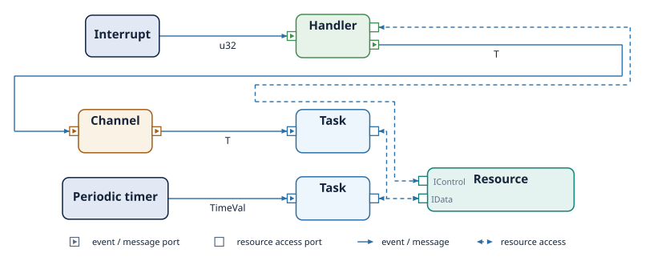

The Reactive Model¶
A Termina program does not run from a main function that drives the system from beginning to end. Instead, it is organized as a set of components that lie dormant until something happens, and then react to it. That something is an event, and the response to it is the execution of an action. This chapter describes the model in which these components operate: where events come from, which components react to them, how the components are connected, and the guarantees the model provides. The tutorial earlier in the book showed this model at work in a concrete application; the purpose here is to set out the concepts and vocabulary that the chapters on each component type will build on.
The execution environment¶
The transpiler translates a Termina program into MISRA C. That generated code
does not call the operating system directly. It runs on top of the Termina
Operating System Abstraction Layer, the OSAL, which provides a uniform interface
to the services a reactive program needs: scheduling, interrupt handling,
synchronization, and the passing of messages between components. Each supported
platform, whether a real-time operating system such as RTEMS or FreeRTOS or the
posix-gcc platform used for development, supplies its own implementation of
this interface. The Termina code is therefore the same across platforms, and the
OSAL adapts it to the primitives of the target underneath.
Events and their sources¶
Nothing happens in a Termina system until an event occurs. An event is generated by an emitter, and Termina recognizes four kinds. A periodic timer emits an event at a fixed interval and drives activities that must run regularly, such as the acquisition of housekeeping data. A hardware interrupt is triggered when a device signals it, and it carries the interrupt vector as its value. A system event marks a distinguished moment in the system's life, the most important being the initialization event, delivered once at start-up. Finally, a runtime exception is emitted when the runtime detects an abnormal condition, such as a deadline overrun or an invalid memory access; exceptions are a source of events, not a control-flow construct, and there is no try or catch in the language.
Each event is delivered to a single component, triggering the execution of one action.
Reactive entities and passive resources¶
Termina has three kinds of classes: the task, the handler, and the resource. Two of them react to events; the third does not.
Tasks and handlers are the reactive entities of the system: they hold the ports through which events reach them, and they define the actions that run in response. A task has its own thread of execution and a scheduling priority, and it reacts to timer events and to messages arriving on its input queues. A handler has no thread of its own; its action runs in the context of the source that triggered it, typically an interrupt, and is meant for the short, time-critical work that must be done immediately before control returns to the rest of the system.
A resource, by contrast, is not a reactive entity. It is a passive entity that encapsulates shared state together with the procedures that operate on it. A resource never reacts to an event; it performs its work only when a task or handler calls one of its procedures. It has no behavior of its own; what it provides is a safe, mutually exclusive point of access to data shared by several components.
The unqualified term class covers all three; the terms reactive entity and reactive class refer specifically to tasks and handlers.
Run to completion¶
When an event triggers an action, that action runs to completion before the entity it belongs to will react to another event. An action does not block midway and wait; it performs a bounded sequence of steps and returns. Combined with the rules already seen in the language basics, that every loop has a statically known bound and that recursion is forbidden, the run-to-completion discipline makes it possible to determine the worst-case duration of each response in advance, as a real-time system requires.
Ports and connections¶
Reactive entities do not refer to one another, nor to the resources they use, by name. Each entity instead exposes ports, and connections between ports are established separately in the application module when the system is assembled. This separation keeps a component independent of the specific instances to which it is wired.
A port has one of four roles. A sink port receives events, such as timer or interrupt events, and names the action they trigger. An input port receives messages from a queue, and likewise names the action that processes them. An output port sends messages to a queue. An access port grants an entity access to a resource via one of its interfaces. The chapters that follow show how each port type is declared, and the chapter on ports and channels in the next part treats them in full.
The following diagram brings the pieces together: events flow from emitters into the reactive entities, messages travel between entities through channels, and shared state is reached through resources.

Communication, and freedom from deadlock¶
Components interact in only two ways: they share data through resources accessible via ports, and they exchange messages asynchronously through channels, which are bounded message queues. There is no shared mutable global state outside of resources, and no synchronous rendezvous between components. Because all sharing passes through resources whose mutual exclusion is managed in a disciplined way, and because message passing is asynchronous and bounded, a Termina system is free of deadlock by construction.
Automatic protection¶
Access to a resource is mutually exclusive, but the programmer never writes the code that enforces it. The transpiler analyzes how each resource is shared and inserts the appropriate protection on its own. Depending on the case, that protection may be a priority-ceiling mutex, when the resource is used by more than one task; the disabling of interrupts, when it is shared between a task and a handler; lock-free atomic access, for the atomic array types; or no protection at all, when a resource is reached by a single entity and none is needed. The mechanism is chosen to match the way the resource is actually used. When a lock is required, one is generated; the transpiler selects it and emits it, so the programmer does not have to.
The chapters ahead¶
The three chapters that follow examine each kind of class in turn: the resource class, which defines passive shared components; the task class, which defines the priority-scheduled reactive entities; and the handler class, which defines the lightweight entities that respond to interrupts and other immediate events. The ports introduced here, and the channels through which messages flow, are then treated in detail in the part on communication and memory.